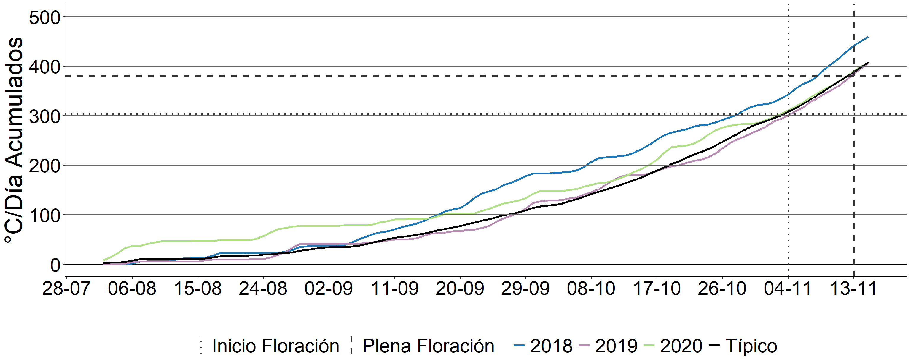

Predicción del incio y plena floración en Moreno
Fórmula de Grados-Día
La fórmula para calcular los grados-día (\(GD\)) acumulados se define como:
\[ GD = \sum \left( \frac{T_{\text{max}} + T_{\text{min}}}{2} \right) - T_b \]
Donde:
- \(GD\): Grados-día acumulados.
- \(T_{\text{max}}\): Temperatura máxima diaria.
- \(T_{\text{min}}\): Temperatura mínima diaria.
- \(T_b\): Temperatura base.
- \(\sum\): Suma acumulativa para un rango de tiempo dado.
## # A tibble: 200 × 5
## BaseTemp R2 RMSE Event DataFrameName
## <dbl> <dbl> <dbl> <chr> <chr>
## 1 12 0.873 10.4 Inicio de floración df_15
## 2 12 0.873 10.4 Inicio de floración df_16
## 3 12 0.835 12.1 Inicio de floración df_14
## 4 12 0.833 10.8 Inicio de floración df_17
## 5 12 0.816 5.86 Inicio de floración df_63
## 6 6 0.815 17.8 Inicio de floración df_63
## 7 12 0.809 14.8 Inicio de floración df_135
## 8 6 0.803 19.8 Inicio de floración df_62
## 9 4 0.801 23.3 Inicio de floración df_63
## 10 10 0.796 20.4 Inicio de floración df_135
## # ℹ 190 more rows## # A tibble: 3 × 5
## BaseTemp R2 RMSE Event DataFrameName
## <dbl> <dbl> <dbl> <chr> <chr>
## 1 12 0.816 5.86 Inicio de floración df_63
## 2 12 0.816 5.86 Plena floración df_63
## 3 12 0.816 5.86 Plena floración df_63Gráfico con predicciones y datos puntuales para cada año

Resultado:
Inicio de floración (10%) con 303,5 grados-día acumulados y Temperatura base de 12°C a partir del 2 de agosto.
Plena floración (%máx) con 380,2 grados-día acumulados y Temperatura base de 12°C a partir del 2 de agosto.

Fechas de incio y plena floración
## [1] "2025-11-04"## [1] "2025-11-13"Determinación de fechas de inicio y plena floración  Suma térmica de °C por día acumulados para los años 2018. 2019, 2020 y un año típico estimado por la serie 2013-2024 para la localidad de Moreno. Las líneas horizontales indican los GD acumulados predichos por cada modelo para alcanzar el evento fenológico. Las líneas verticales indican la fecha de los eventos fenológicos para un año típico. Inicio de floración 04-11 y plena floración 13-11.